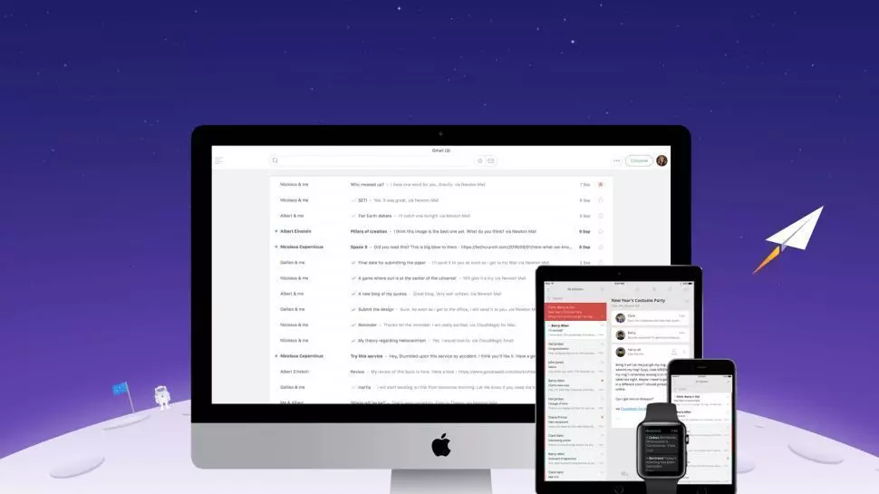

El correo electrónico, a pesar de sus ventajas, también presenta varias desventajas incluyendo su falta de interacción inmediata, vulnerabilidad a virus, dependencia de internet y necesidades de dispositivos electrónicos.
Falta de interacciónLos correos electrónicos deben leerse uno a la vez, en lugar de chats y servicios de mensajería instantánea. |
Es comparativamente susceptibleLos virus y los piratas informáticos pueden acceder al correo electrónico como una fuente de pruebas, por lo que crean correos-trampa y otras formas de engaño para acceder a la información de un usuario descuidado |
Requiere internetEl correo electrónico no es una buena opción en países con baja penetración de Internet o con poca conectibilidad. |
 |
Requiere algun aparato electrónicoAdemás de tener electricidad, es necesario disponer de una computadora, teléfono inteligente o tableta para poder acceder al correo electrónico. |